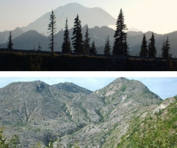

Sometime ago I had the opportunity to visit a friend of mine in Washington State. I had heard of Mount St. Helen. It's eruption made national news. We took a day trip to see the volcano. I'd also heard about a little bit about Mount Rainier so we took another day trip to see it. This site has photos that I took from both of these trips. To see photos from my Mount Rainier trip click or tap on the picture. To see photos from my Mount St. Helens trip click or tap on the picture.